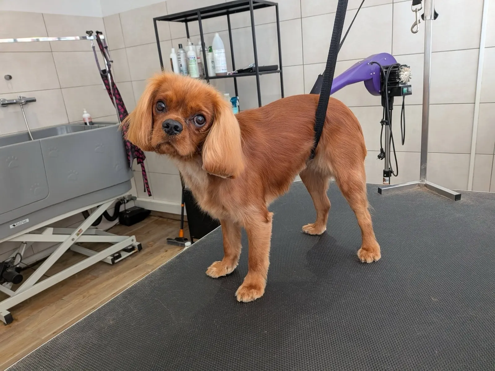
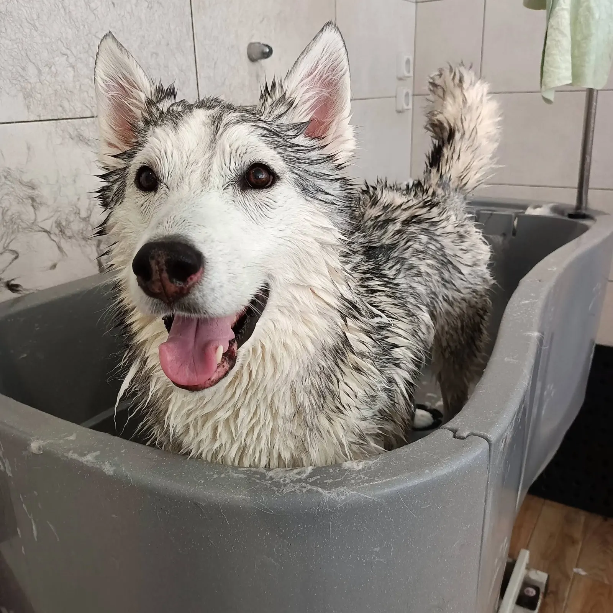
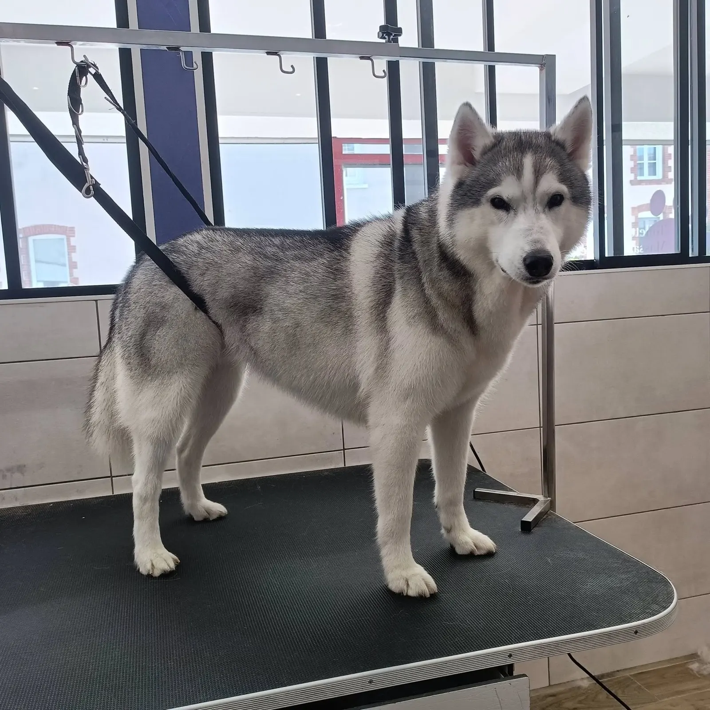
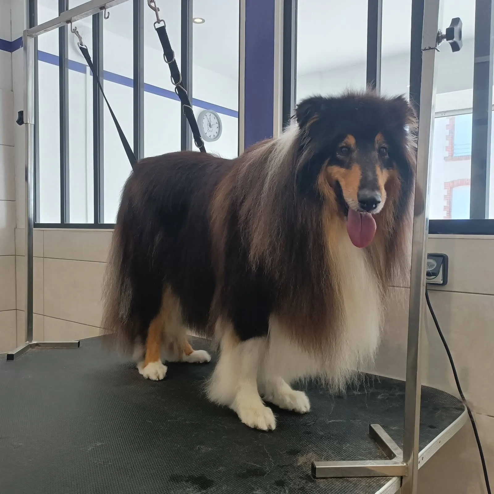
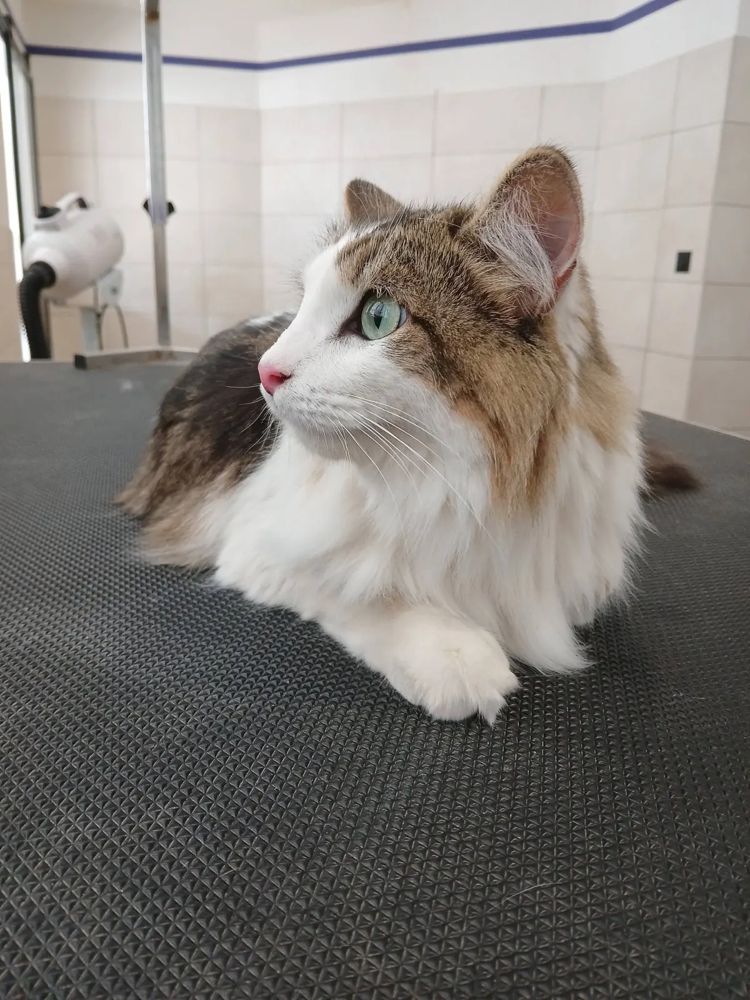
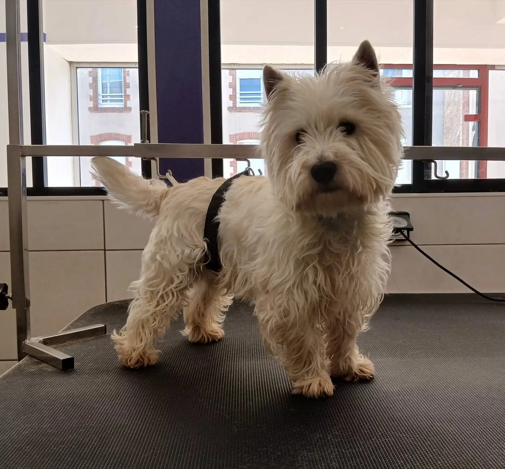
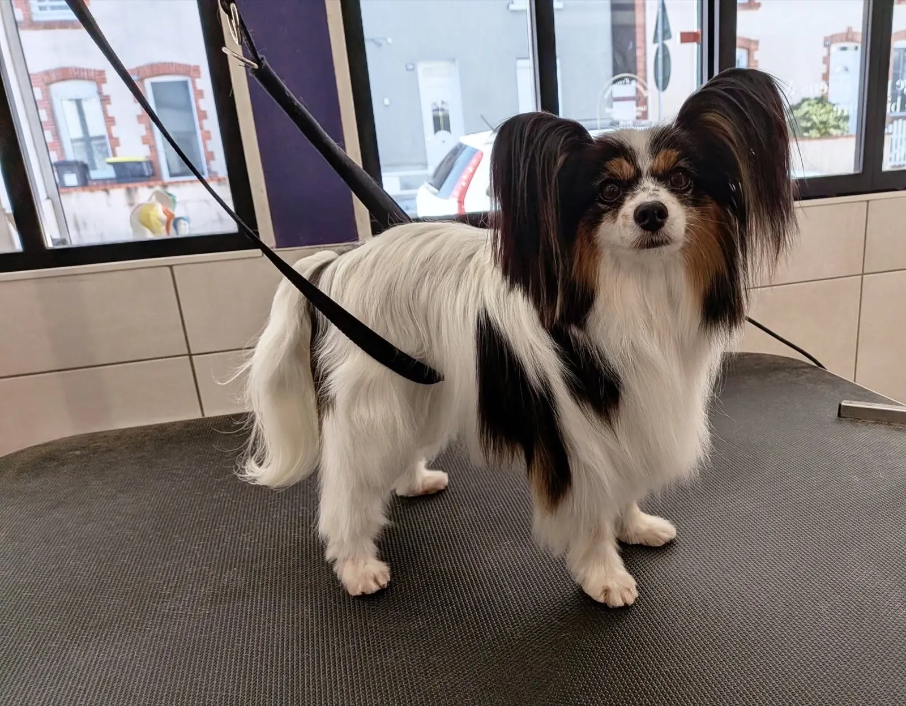
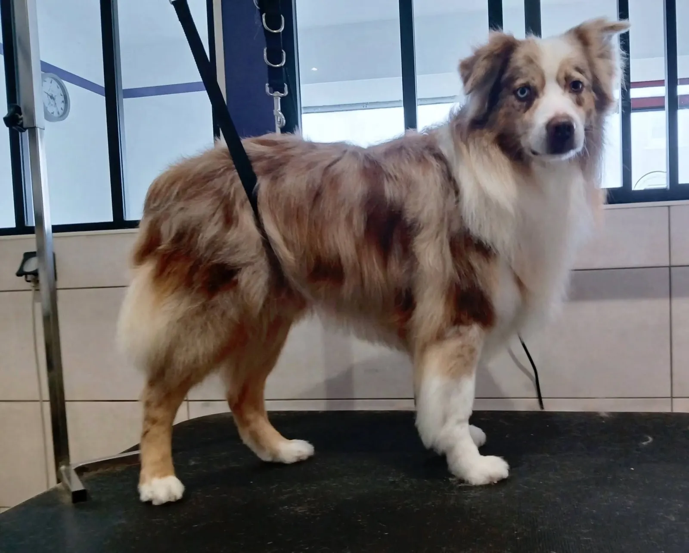
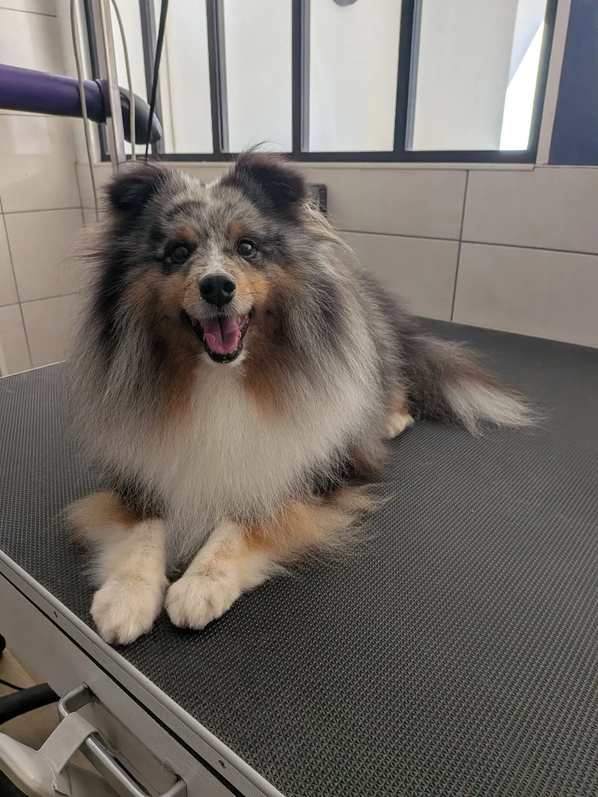
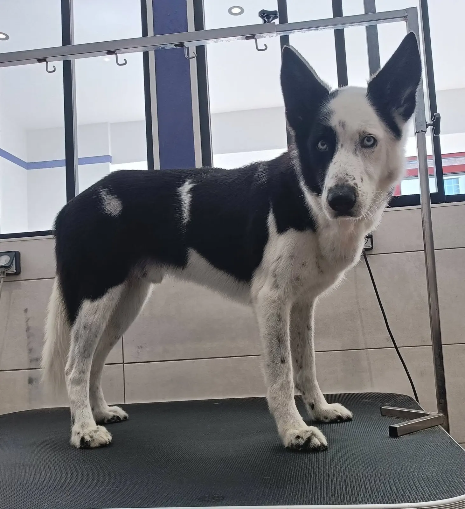

Le toilettage de vos chiens et chats, petits et grands
Toiletteuse diplômée depuis 2014, Juliette vous accueille sur rendez-vous dans son salon de Saint-Macaire-en-Mauges, à Sèvremoine. Elle propose aussi des massages bien-être.
5,0 31 avis sur GoogleVoir les avis- Diplômée depuis 2014
- Chiens et chats
- Sur rendez-vous
- Massages bien-être
- Saint-Macaire-en-Mauges
Du bain à la table, dans le salon
De la baignoire du salon jusqu'au poil sec et brossé sur la table : ce husky est passé par les deux, le même jour.
Toiletteuse diplômée depuis 2014, Juliette s'occupe des chiens et des chats, les petits comme les plus grands.


Ils sont passés sur la table
Colley, westie, papillon, berger, chat à poil long : chaque gabarit a sa place au salon.






Des massages bien-être
En plus du toilettage, Juliette propose des massages bien-être pour vos chiens et vos chats. Elle s'est formée au massage canin auprès de Fazia Gafour, ostéopathe canin.
« Je vous accueille sur rendez-vous, pour toiletter vos chiens et chats, les petits comme les plus grands. »Juliette
Horaires et adresse
Toujours sur rendez-vous : appelez le salon pour réserver votre créneau.

Juliette Toilettage
- Téléphone
- 07 63 87 23 23
- Adresse
- 41 rue Choletaise
Saint-Macaire-en-Mauges
49450 Sèvremoine - juliette-pasquier@laposte.net
- Avis
- 5,0 sur 5 sur Google, 31 avis